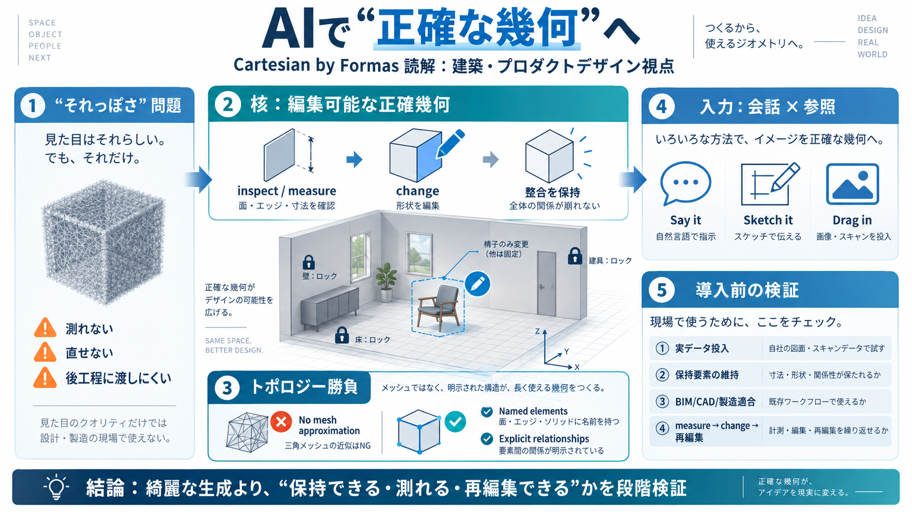

CoreXY vs Cartesian 3D Printers Which Is Best for You in 2026
There are some downsides too. Cartesian printers print slower when you make big things. They take up more space for the …

測れない / 直せない幾何は、CNCや3Dプリントの正しさを担保しにくい。
編集可能なソリッドと“意味の構造”で、後工程へ渡せる状態にする。
What you keep stays exactly（保持要素は正確に維持）
残りは生成・再構成して反復設計を加速
inspect, measure（検査・計測が前提）
change（形状を破綻なく更新）
部材/配置の整合を維持しながら反復
No polygon-mesh approximations（メッシュ中心と逆方向）
整合が必要なBIM/製造で不整合リスクを下げる期待
Say it（自然言語）
Sketch it（スケッチ）
Drag in（写真・プラン・スキャン等）
部品（例：椅子/家具）そのもの
空間配置（例：部屋/配置整合）
要素名（named elements）
関係（explicit relationships）
BIMへ渡す“道筋”を作る
公差の具体値・検証手法がなく、デモだけでは判断しにくい。
IFCが“Planned/予定”表現のため、成果の再現性を要確認。
スキャン/写真/参照を投入し、尺度・座標の破綻がないか確認。
BIM（IFC）/CAD/製造/3Dプリントで整合チェックし、失敗コストを見積もる。
What you keep stays exactly が、指定した要素範囲で再現できるか。
measure→change→再編集で形状・トポロジーが崩れないかをテスト。
There are some downsides too. Cartesian printers print slower when you make big things. They take up more space for the …
The downside to CoreXY printers is that they can be difficult to build and have more complex designs. This makes the pri…
## Company Information. # Cartesian Information. Cartesian is an MIT spinout building indoor spatial AI to streamline re…
Title: CoreXY vs Cartesian 3D Printers: Which Is Best for You in 2026 Blog CoreXY vs Cartesian 3D Printers: Which Is Bes…
Title: C3 AI vs Cartesian Ecosystem Hub (2026) # C3 AI vs Cartesian Ecosystem Hub comparison. C3 AI and Cartesian are bo…